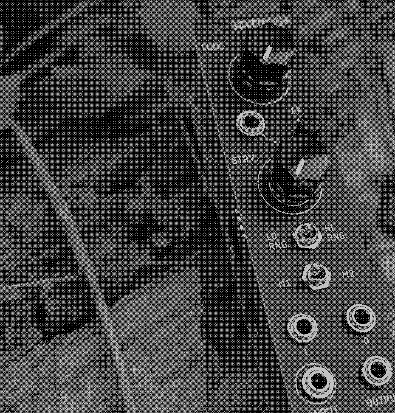

WL-652 - "SOVEREIGN"
REFERENCE DOCUMENTATION

SUMMARY
Sovereign is a DTMF audio mangler / ring mod / chaotic audio generator DTMF based off a DTMF (dial tone multi-frequency) tone decoder IC by Phillips Semiconductors. This new version adds a hi / low RANGE SWITCH, a very weird FEEDBACK LOOP, TUNE CV ATTENUATION, and GENERAL IMPROVEMENTS AND UPDATES in a DESIREABLE 6HP PACKAGE.
Input signals are compared to the tunable internal VCO of the IC,and depending on their compatibilty are mangled in a way that ostensibly is similar to a tradiational ring modulator circuit. Sovereign is as much a sound effector as it is a sound generator, living comfortably between the two arbitrarily binary classes.
SPECIFICATIONS
- 6HP wide (wow)
- Skiff-friendly
- (roughly) 50ma on +12v, 40ma on -12
- 1kOhm input / 100kOhm output impedence
- Vactrol tune control w/ CV in
- Starve control
- insane
FUNCTIONS / CONTROLS
-
TUNE
PLL comparison oscillator control. Ranges from tremolo-range to khz audio depending on RANGE switch. Acts as offset when using TUNE CV.
-
TUNE CV
CV control of TUNE, with attenuation control. Please god do not expect 1v/oct.
-
STARVE
Controls amt of power sent to main PLL chip. Please note! - volume will vary drastically at different STARVE settings!
-
LO RANGE / HI RANGE
PLL tuning range.
-
MODE
M1 = EFFECTOR mode, incoming signals are mangled and then output. M2 = EMITTER mode, input and output are wired together for vaguely oscillator-like operation.
-
FEEDBACK LOOP SEND / RETURN
Pre-PLL feedback loop. When in EMITTER MODE, patch filters, delays, reverbs, etc here to place them in between the PLL's input and output. The feedback loop is within the PLL and will thus sound absolutely disgusting - do not expect a conventional feedback loop!
-
INPUT / OUTPUT
See above. Eurorack "standard"-compliant 1kΩ input / 100kΩ output impedance.
TIPS / TRICKS
-
The STARVE control has a dead zone at the lowest settings. This could be good if you hate how it sounds.
-
At the lower extremes, the Sovereign acts more like a very choppy tremolo, slightly reactive to input amplitude.
-
In EMITTER (M2) mode, a high enough STARVE setting results in strange sequenced noises. try to replicate the sound in your head on the Sovereign.
-
There’s a certain setting that we can’t talk about here. We can’t say any more right now.
CONTACT + SUPPORT
Please do not hesitate to reach out to us with questions, comments, repair requests, returns, parables, assembly opcodes, and general support. You can reach us via:
EMAIL – wildfirelaboratories@gmail.com
INSTAGRAM – instagram.com/wildfire_laboratories
WEBSITE – wildfirelaboratories.com d
WARRANTY INFO
All Wildfire Laboratories devices have a 5-month warranty from time of
purchase. This covers manufacturing + assembly issues. Incorrect power
connections (power supplies with wrong polarity, too much power, etc), wear
and tear from normal use, and issues due to modifications are not covered by
said Warranty (although you should absolutely email us with any mods you
do).
We will repair, replace, or refund depending on the circumstances. Shipping will be paid by the buyer. Thank you very much for your support, and as always, Wildfire wishes you an easy listening.